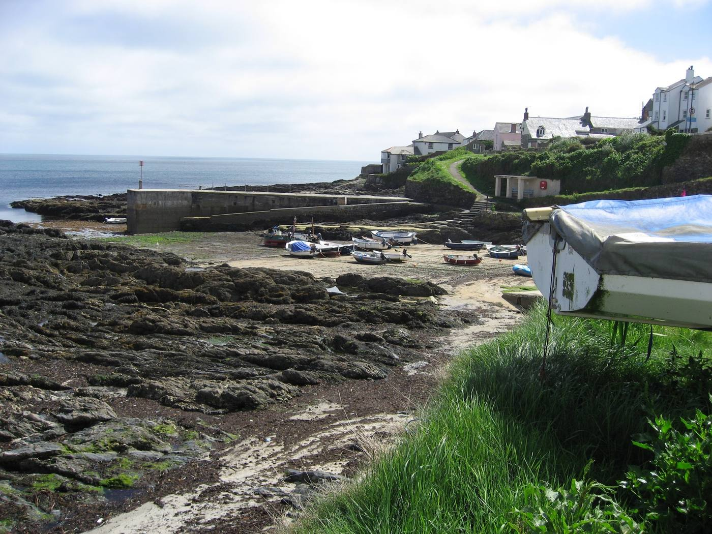
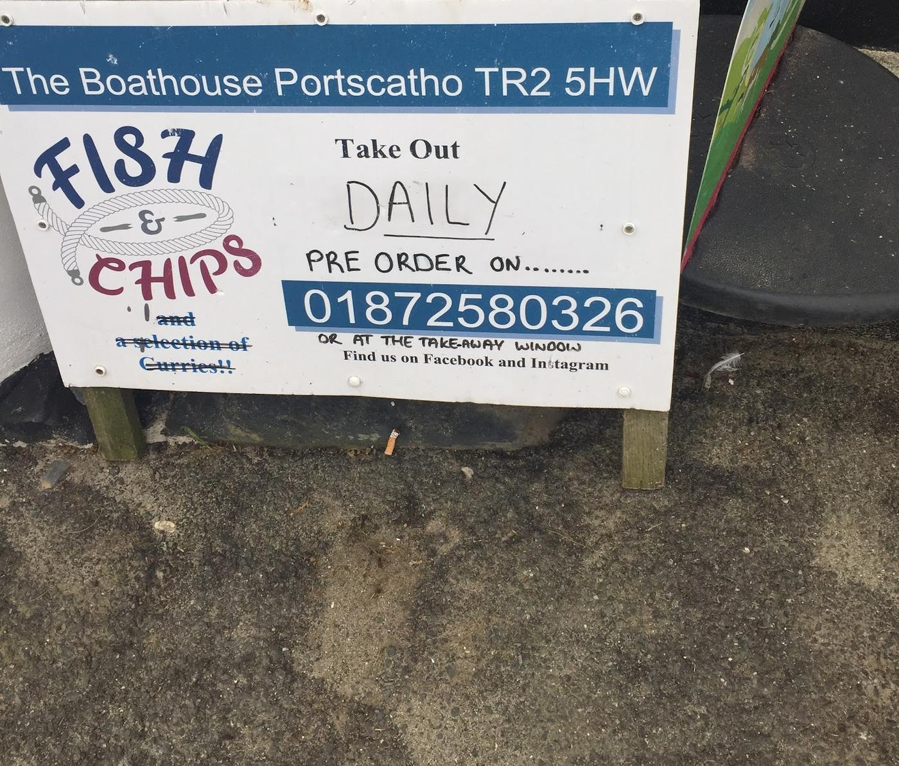
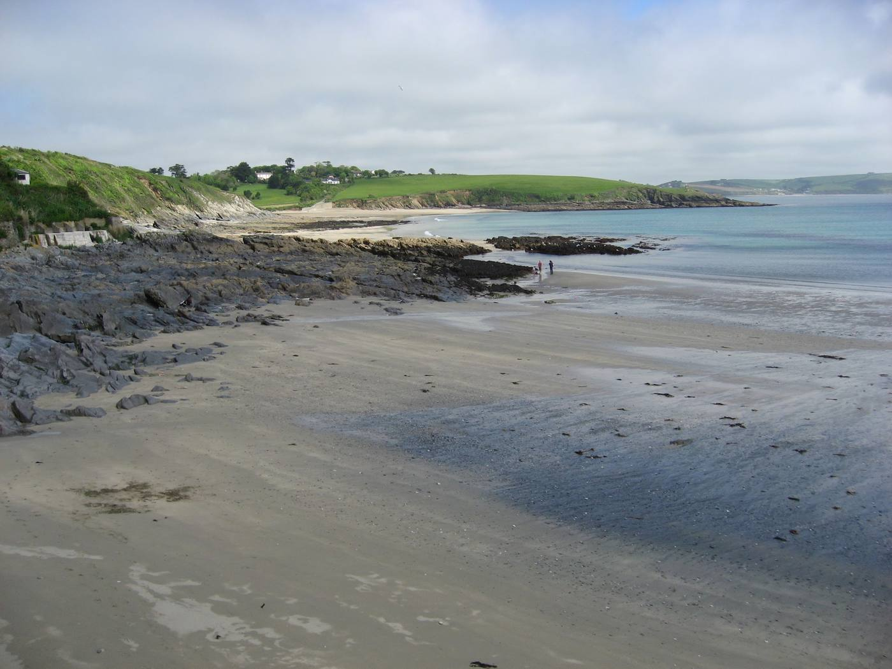
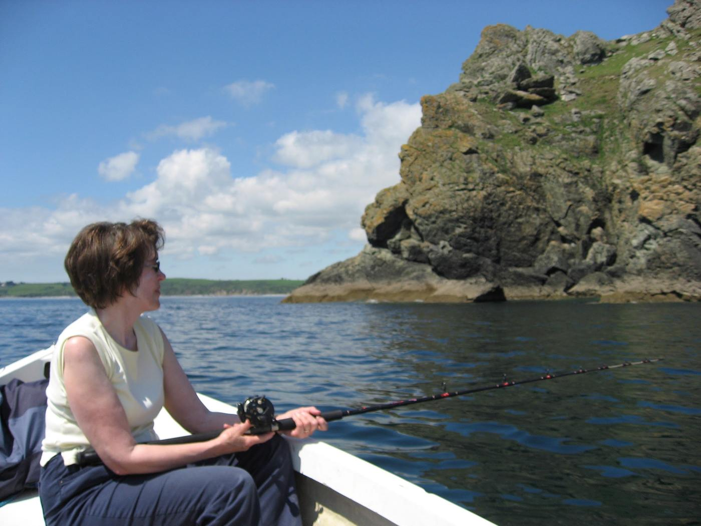

A taste of Portscatho


Jump in
🗺️Explore & mapBeaches, the Hidden Hut, St Mawes & more› 🥾Coastal walksCliff-path routes from the village› 🐦Nature & wildlifeBirds, seals, and what's in the sea› 🌊Weather & tidesForecast, sea state & tide tables› 💡Fun facts & tipsLocal lore and practical know-how›Explore
🗺️ Map of the area
Pinch to zoom. Portscatho sits mid-way along the Roseland's east coast, on Gerrans Bay.
🏖️ Beaches & swimming


🍴 Eat & drink

- 🔥The Hidden HutLegendary beach café at Porthcurnick. Day menu of pasties, wraps & cake; famous Feast Nights book out fast online.
- 🍺The Plume of FeathersVillage pub in Portscatho — pints, pub food and a proper local welcome.
- 🍟The BoathouseProper fish & chips (plus a selection of curries) to take away. Pre-order on 01872 580326 or at the takeaway window.
- 🏪Village storesGeneral shop on the harbour for supplies, papers and ice cream.
- 🦞Fresh seafoodCrab and lobster still landed locally — ask on the harbour or at the shop.

🚗 Days out nearby


Also within reach: Falmouth (maritime museum, beaches & shops, ~45 min via the ferry) and the wild headland at Nare Head.
Coastal walks
The South West Coast Path runs right through the village. Cliffs, wildflowers and sea views in both directions. Wear grippy shoes — paths can be muddy and near cliff edges.

Portscatho → Porthcurnick → Towan Beach
Head north on the coast path past Porthcurnick Beach (pause at the Hidden Hut) and on to the sands at Towan. Big open sea views across Gerrans Bay. Return the same way or loop inland via Rosevine.
Portscatho → Gerrans → St Anthony Head
A proper day's walk south to the tip of the peninsula. Lighthouse, WWII gun batteries, and views to St Mawes and Falmouth. Loop back inland through fields and lanes.
Gerrans Bay circular via Rosevine
Coast path one way, quiet country lanes and footpaths back. Good for a shorter afternoon leg-stretch with a café stop.
Nare Head & Carne Beacon
A short drive to the dramatic headland at Nare, then a wildflower cliff walk. Carne Beacon is one of the largest Bronze Age burial mounds in Britain.

Nature & wildlife
🐟 What's in the sea now
Seasons are guides — Cornish weather and local conditions shift them a little each year. 🎣 Right now is highlighted.
🐦 Birds on the cliff walks
 ChoughCornwall's emblem — glossy black with a red curved bill & legs. Recovering along Roseland cliffs. Listen for the "chee-ow" call.Learn more
ChoughCornwall's emblem — glossy black with a red curved bill & legs. Recovering along Roseland cliffs. Listen for the "chee-ow" call.Learn more FulmarStiff-winged "tube-nose" gliding along the cliff faces spring–summer. Nests on ledges.Learn more
FulmarStiff-winged "tube-nose" gliding along the cliff faces spring–summer. Nests on ledges.Learn more GannetHuge white seabird with black wingtips, diving offshore like an arrow — best on breezy summer days.Learn more
GannetHuge white seabird with black wingtips, diving offshore like an arrow — best on breezy summer days.Learn more Peregrine & kestrelPeregrine (fastest bird alive) hunts the headlands; kestrels hover over the cliff-top grass.Learn more
Peregrine & kestrelPeregrine (fastest bird alive) hunts the headlands; kestrels hover over the cliff-top grass.Learn more StonechatLittle robin-shaped bird on gorse tops — call sounds like two pebbles knocking together.Learn more
StonechatLittle robin-shaped bird on gorse tops — call sounds like two pebbles knocking together.Learn more Shag & cormorantBlack diving birds on the rocks, wings spread out to dry.Learn more
Shag & cormorantBlack diving birds on the rocks, wings spread out to dry.Learn more OystercatcherBlack-and-white wader, long orange bill, loud "peep-peep" along the shore.Learn more
OystercatcherBlack-and-white wader, long orange bill, loud "peep-peep" along the shore.Learn more Guillemots & razorbillsAuks rafting on the sea offshore, mainly spring/early summer.Learn more
Guillemots & razorbillsAuks rafting on the sea offshore, mainly spring/early summer.Learn more
Bird photo credits
- Loading…
🦭 Seals, dolphins & more
 Grey sealsYear-round in Gerrans Bay — often a curious head bobbing near the harbour or off the rocks.Learn more
Grey sealsYear-round in Gerrans Bay — often a curious head bobbing near the harbour or off the rocks.Learn more Dolphins & porpoiseCommon & bottlenose dolphins pass offshore; harbour porpoise year-round. Scan the horizon on calm days.Learn more
Dolphins & porpoiseCommon & bottlenose dolphins pass offshore; harbour porpoise year-round. Scan the horizon on calm days.Learn more Basking sharkThe world's 2nd-largest fish — occasionally seen feeding at the surface May–July in warm calm spells.Learn more
Basking sharkThe world's 2nd-largest fish — occasionally seen feeding at the surface May–July in warm calm spells.Learn more JellyfishCompass, moon & barrel jellyfish drift in during summer (this barrel jelly was spotted from the boat). Harmless to admire; don't touch.Learn more
JellyfishCompass, moon & barrel jellyfish drift in during summer (this barrel jelly was spotted from the boat). Harmless to admire; don't touch.Learn more Rock poolsLow tide reveals shore crabs, blennies, anemones, prawns & starfish at Tatams and Porthcurnick.Learn more
Rock poolsLow tide reveals shore crabs, blennies, anemones, prawns & starfish at Tatams and Porthcurnick.Learn more
Sea life photo credits
- Loading…
🌸 Wildflowers & plants
The cliff paths blaze with colour spring to autumn: thrift (sea pink), kidney vetch, sea campion, gorse (coconut-scented), foxgloves, and in late summer purple heather. Look for rare lichens on the rocks — a sign of Cornwall's clean Atlantic air.
Weather & tides
🌤️ Forecast
Live data from Open-Meteo for Portscatho (50.19°N, 5.00°W). Times shown in UK time.
💨 Wind
🌊 Sea state
…but it's not always sunny!
Portscatho faces the open Atlantic, and when a winter storm rolls in it really means it — waves crash clean over the harbour wall and the whole bay turns to spray. Magnificent to watch, but stay well back from the edge and the sea front when it's rough.


🕐 Tide times
Fun facts & tips
💡 Did you know?
🎒 Practical tips
- 🅿️ParkingVillage parking is limited — use the car park at the top and walk down. National Trust car parks at Porth Farm (Towan) & Carne.
- 📶SignalMobile coverage is patchy on the cliffs — download maps offline before you set out.
- 🐕DogsWelcome on the coast path; seasonal restrictions on some beaches in summer. Watch for cliff edges.
- 🚿SwimmingHarbour & Porthcurnick are lovely, but there are no lifeguards — swim near others & respect the tide.
- 🌡️Sea tempWarmest Aug–Sep (~16–17°C); bracing but swimmable May–Oct. A wetsuit extends the season.
🆘 Useful in an emergency
- ☎️999 or 112For coastguard emergencies ask for the Coastguard. Note the nearest coast-path marker or beach name.
- 🩹NHS 111Non-emergency medical help. Nearest minor injuries / hospital is in Truro (Royal Cornwall).
- 🌊Rip currentsIf caught, don't fight it — float, raise an arm, and swim parallel to shore.